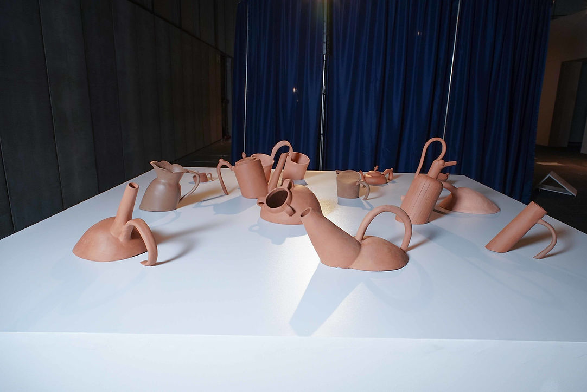
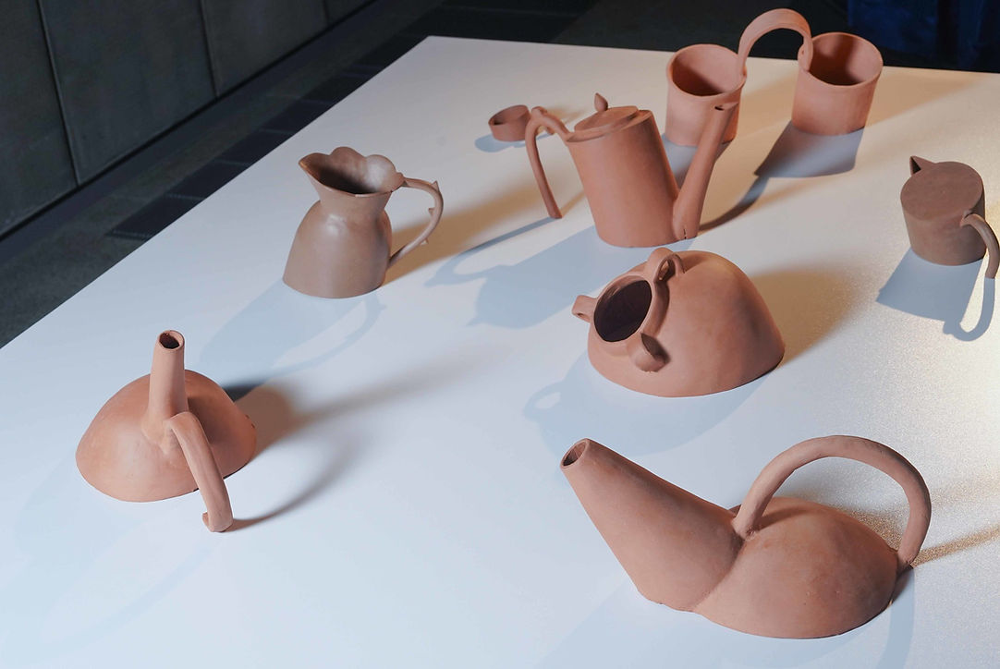
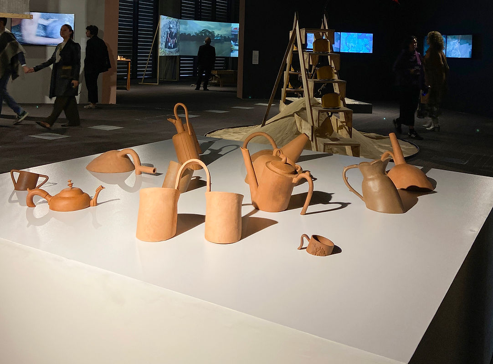

Bache
25 - 30 September 2024
Ágora convention centre - Bogotá. Artecámara section.
“Una moneda al aire”
Curated by Ximena Gama.
“Bache” is a project that sets out to explore a body of vessels from different periods and cultures. Vessels are, essentially, objects with handles or grips, made to hold and carry their contents. Following that logic: if they have no bottom, have they stopped being vessels?
“Bache” proposes a scene in which the pieces appear to sink, or to have been petrified, through cuts made crosswise at different points on each one. It aims to produce an inconsistency in the notions of completeness and stability. The resulting unevenness, and the material itself, open up a question about the discourses that historically frame these objects, bringing together in a single space a selection of pre-Hispanic clay vessels and Western jugs from the seventeenth and eighteenth centuries, usually metal or porcelain.
The pieces are made of fine reddish grog clay, which relates to local pottery. This gesture also casts the group of objects as entities that imitate a certain materiality and historicity.

Bache. Installation. Ceramic, white platform. 190 x 190 x 70 cm. 2024

Detail.

Bache. Installation. Ceramic, white platform. 190 x 190 x 70 cm. 2024